Conoce cómo podemos colaborar juntos
Déjanos tus datos y entra a nuestro portafolio. Nuestro equipo podrá contactarte para acompañar a tu empresa.

Somos la Caja de Compensación Familiar del Cesar, COMFACESAR, comprometida en cumplir los sueños de nuestras empresas afiliadas y de la comunidad en general.
Conoce cómo podemos colaborar juntos

Sonrisas

de eventos

de obras
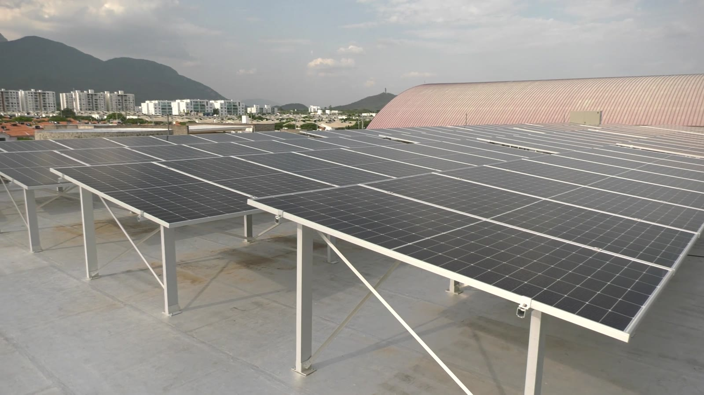
ambientales
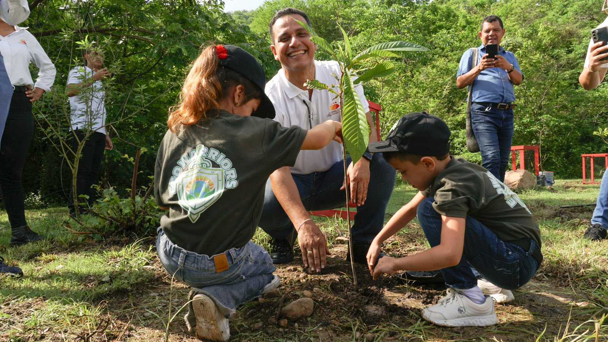
Amor
Sus uniformes en desuso, convertidos en artículos útiles con su marca.
*Estimado: 0,3 kg por uniforme × 6,1 kg de CO₂ evitados por kg de ropa reutilizada (Humana People to People).
Del uniforme a un nuevo producto
- PASO 1RecolectamosEn sus instalaciones, con acta de entrega.
- PASO 2TransformamosPatronaje y confección con talento local.
- PASO 3PersonalizamosBordado o marcación con su identidad.
- PASO 4EntregamosProductos listos e informe de impacto.
Toque para ver cada uno


Gestión sostenible
de eventos
Somos el aliado técnico de los organizadores de eventos.
Planificamos, tramitamos y medimos para que su evento sea seguro, esté en regla y sea responsable con el ambiente y la comunidad.
Planificación
Planes de emergencia, contingencia y tránsito.
Permisos
Acompañamiento en los trámites ante las autoridades.
Logística sostenible
Residuos, puntos de acopio y limpieza.
Impacto social
Medimos el efecto del evento en la comunidad.
- 1AntesDiagnóstico, documentos de planificación y permisos.
- 2DuranteEstrategias de bajo impacto y acompañamiento en sitio.
- 3DespuésLimpieza, medición de impacto e informe de resultados.


Gestión sostenible
de obras
Su aliado técnico en cada etapa de la obra.
Experiencia en la formulación y ejecución de planes de manejo ambiental, caracterizaciones sociales y acompañamiento social en construcción.


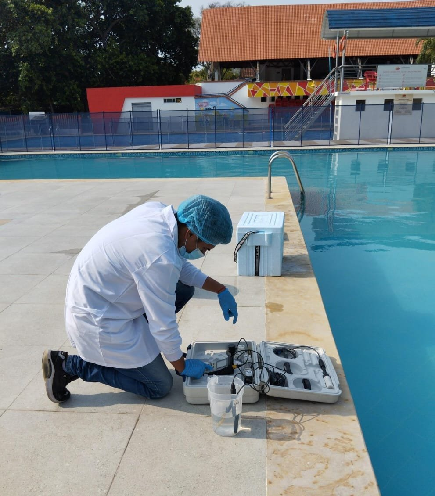
Estudios y soluciones
ambientales
Medimos, diagnosticamos e implementamos.
Para que su organización use mejor la energía y el agua, mida y reduzca sus emisiones y conozca el valor de su capital natural.
- 1Levantamiento y mediciónRecogemos información y medimos en campo con equipos especializados.
- 2Estudio e informe técnicoEficiencia, inventario de gases de efecto invernadero o valoración, según el servicio.
- 3PriorizaciónDefinimos las tecnologías y estrategias con mejor resultado para su caso.
- 4ImplementaciónSuministro e instalación de las tecnologías priorizadas, con actas de entrega.
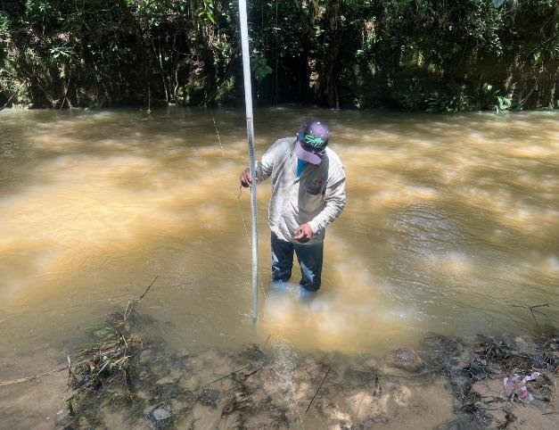
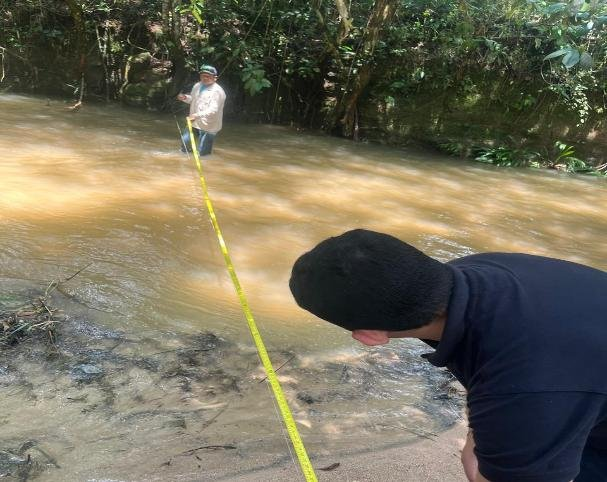
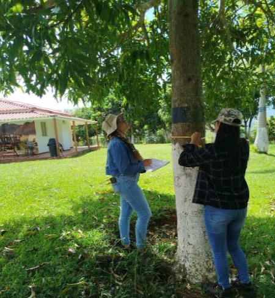
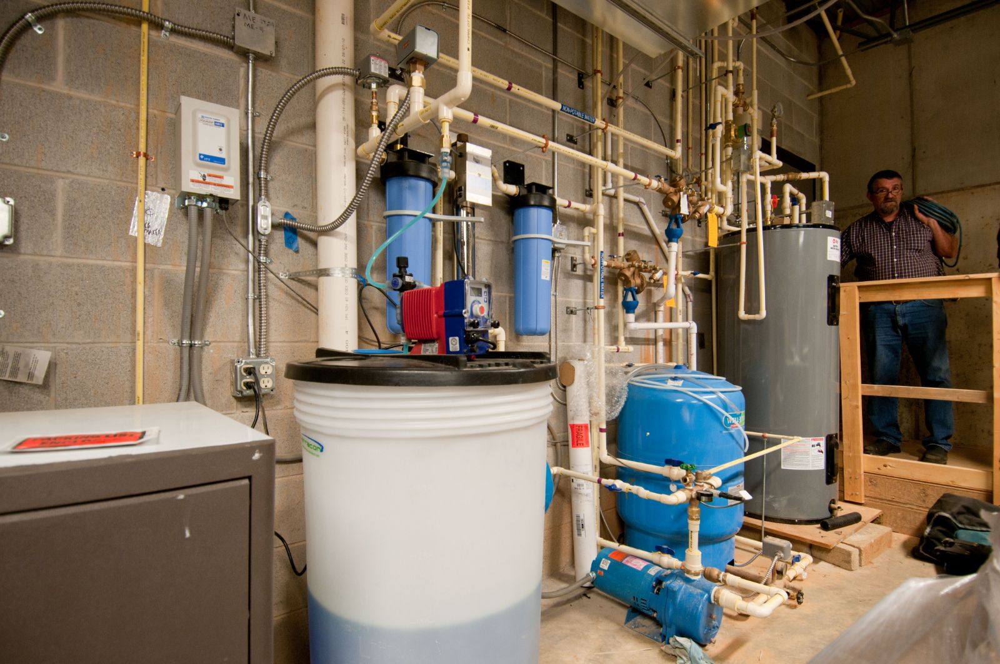
Créditos de imagen: U.S. Department of Agriculture (CC BY 2.0).
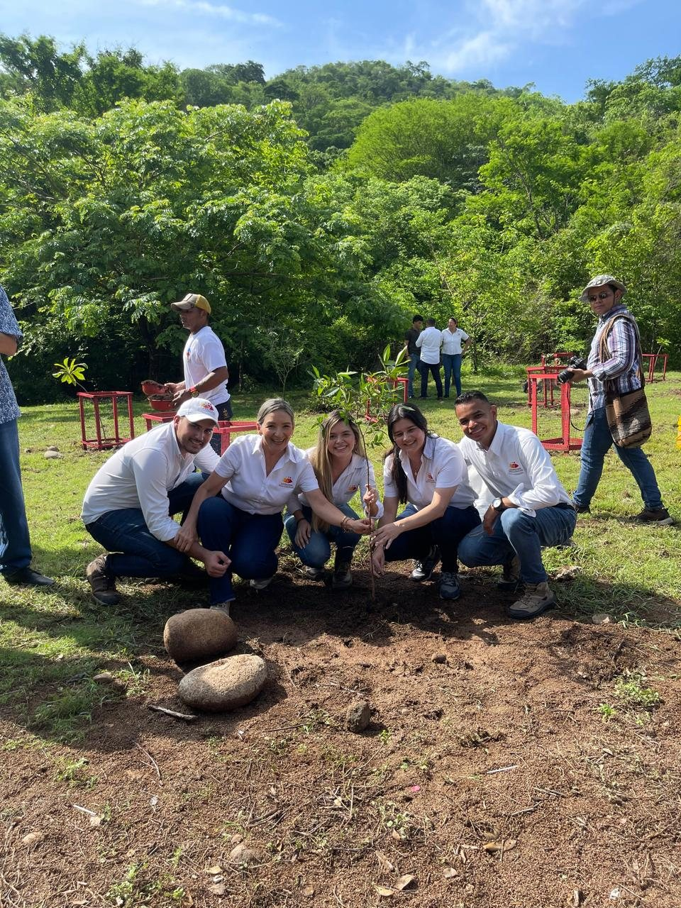
Siembra Amor
Talleres de sostenibilidad con siembra de árboles.
Acompañamos a su empresa a cumplir la Ley 2173 de 2021 con una jornada teórico-práctica en la que cada participante siembra dos árboles, con las especificaciones de la norma.
Una obligación que se convierte en propósito
- Quién
- Medianas y grandes empresas
- Cuánto
- Mínimo 2 árboles por empleado, cada año
- Dónde
- En Áreas de Vida delimitadas por municipios y autoridades ambientales
- Cómo se certifica
- Certificado Siembra Vida Empresarial, tras verificar la siembra georreferenciada con especies nativas
Aprender, sembrar y dejar huella
- 1Taller de sostenibilidadUn espacio teórico-práctico para su equipo de trabajo.
- 2SiembraCada participante siembra 2 árboles, con las especificaciones de la norma.
- 3ProtecciónEncerramiento y protección de los árboles sembrados.
- 4SoportesListados de asistencia y registro georreferenciado de la siembra.
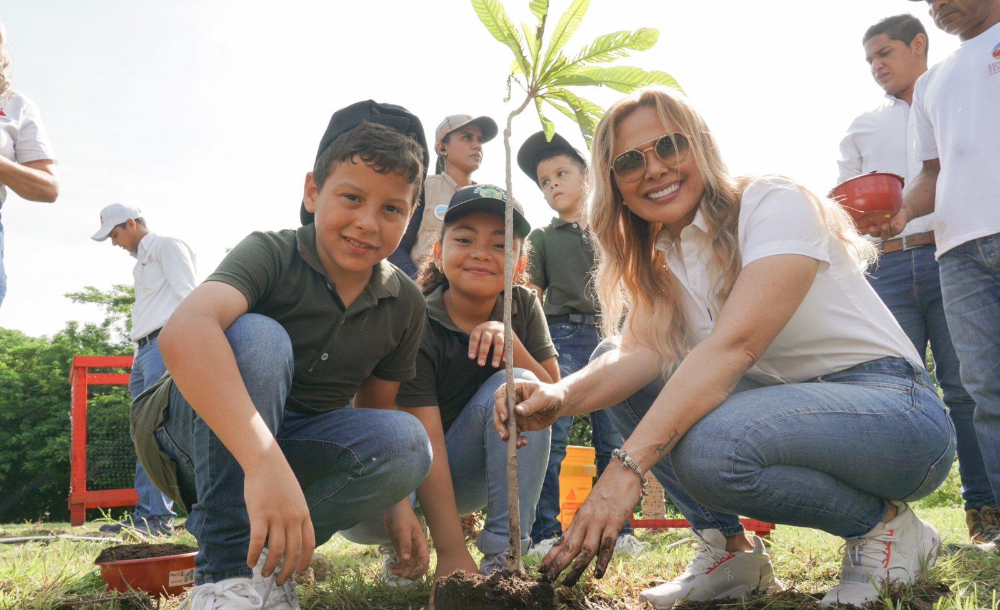
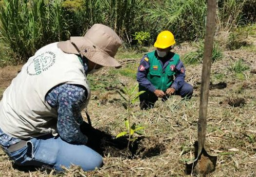
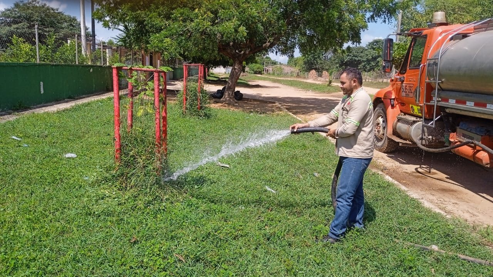
La Ley 2173, explicada: video de un minuto con los pasos para cumplirla.

Líder de la Unidad · Carlos Alfonso Echeverri Herrera